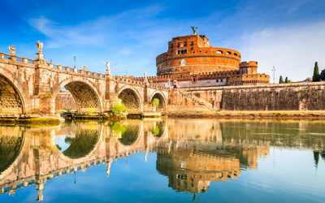

Roma, a capital da Itália, é uma cidade cosmopolita, enorme, com quase 3.000 anos de arte, arquitetura e cultura influentes no mundo todo e à mostra. Alguns lugares para visitar são: o Coliseu e o Castelo de Santo ngelo. Roma, a capital da Itália, é uma cidade cosmopolita, enorme, com quase 3.000 anos de arte, arquitetura e cultura influentes no mundo todo e à mostra. Alguns lugares para visitar são: o Coliseu e o Castelo de Santo Ângelo.
Pontos Turísticos
 |
Coliseu
O Coliseu é um símbolo da Roma Imperial. O local é também conhecido como Anfiteatro Flaviano. É o maior anfiteatro já construído. Sua construção começou em 72 d.C e foi concluída em 80 d.C. Era utilizado para combate entre gladiadores. No ano de 2007 foi eleito como uma das sete maravilhas do mundo moderno. |
|  | Castelo de Santo Ângelo
O Castelo de Santo Ângelo, também conhecido como Mausoléu de Adriano, está localizado às margens do Rio Tibre. A região é linda, principalmente no final do dia. Assistir ao pôr do sol de lá é uma ótima pedida. |
O que está incluso?


Passagem aérea: passagens aéreas de ida e volta para Roma - Aeroporto Internacional de Roma (FCO), em classe econômica, podendo haver conexão e/ou escala nos trechos.
Bagagem: sua mala de mão deve pesar até 10kg para ser acomodada no bagageiro do avião, nos voos de ida e volta. Para trechos no exterior, é possível que as companhias cobrem taxas extras para despachar a bagagem.
Hospedagem: em Roma. A WanderLust definirá a hospedagem, a partir da disponibilidade e tarifário promocional dos parceiros. Nesta oferta, as opções de hospedagem se encaixam na categoria conforto e oferecem regime All Inclusive.
Entre no clima da sua viagem!